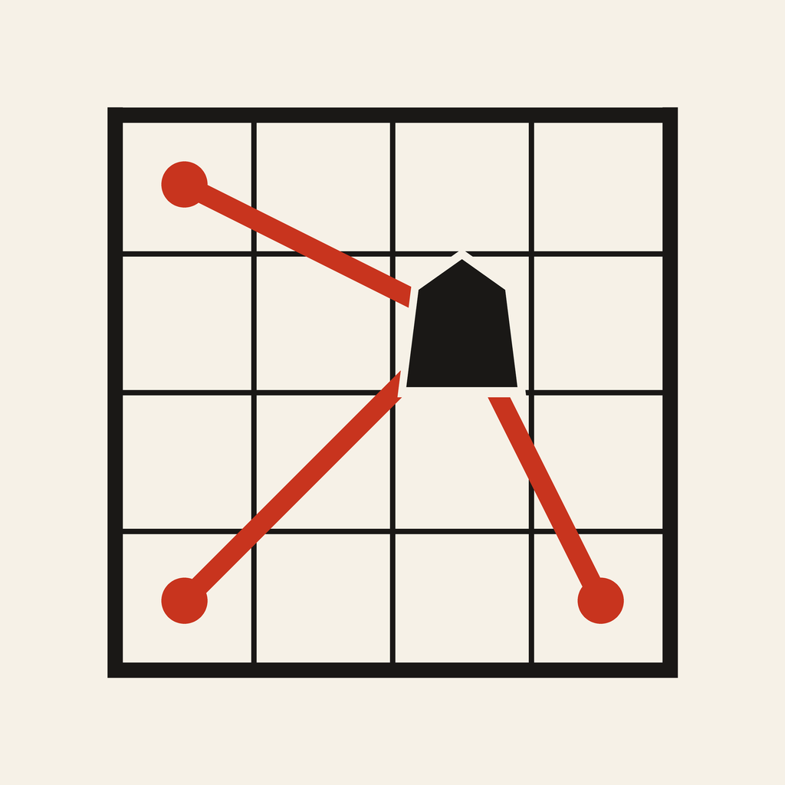
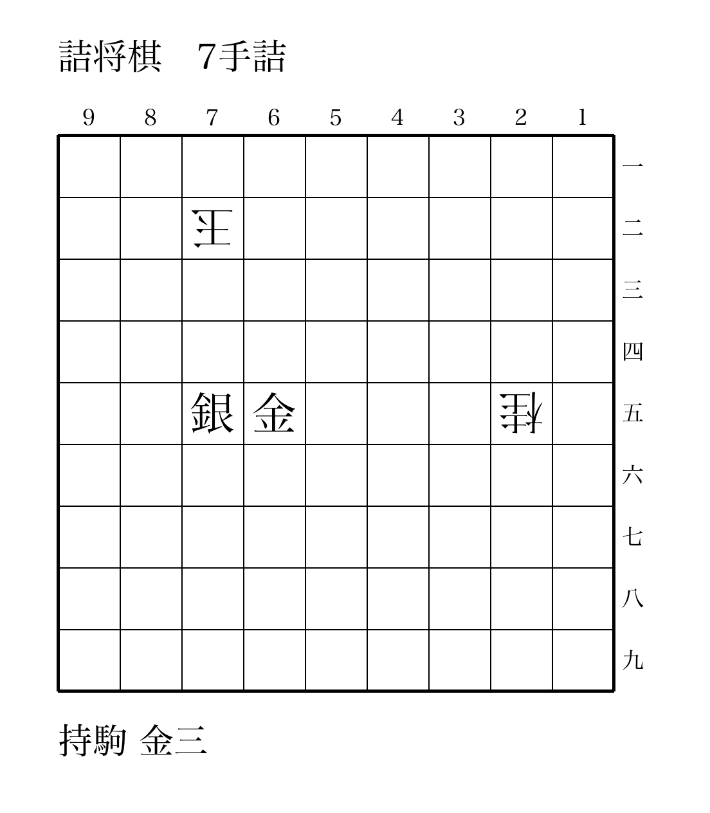

本や新聞の詰将棋の図面をカメラで撮ると、盤面と持駒を読み取り、何手詰めかを判定して、解答手順を盤の上で1手ずつ再生します。駒を1枚ずつ手で入力する必要はありません。
読み取りも探索も端末の中だけで行います。画像を外部に送りません。
手元に図面がないときは、下の図面を別の画面に表示してカメラで撮るか、画像を保存して「写真・スクショから」で読み込んでください（7手詰、当アプリの自作問題）。

駒を漢字で描いた図面（本・新聞・Web の図面。紙の写真とスクリーンショット）が対象です。駒の絵を使った盤面、実物の盤と駒、手書きの図は対象外です。読み取りは完全ではないため、解く前に盤面と持駒を必ず確認してください。
何手詰めかの判定と初手のヒントは、何題でも使えます。自分で読み込んだ問題の全手順は、通算3題まで見られます。
アプリ内課金（一度だけのお支払い。サブスクリプションではありません）で、全手順の再生が無制限になり、変化と紛れ、KIF / SFEN のコピー、解いた問題の保存が使えます。機種変更後は、設定の「購入を復元」で引き継げます。
解答を募集している問題の答えを、応募や投稿に使わないでください。
ご質問・ご要望・不具合報告は、お問い合わせフォームよりお寄せください。
Point the camera at a printed tsume-shogi (shogi mating problem) diagram. The app reads the board and the pieces in hand, finds the mate on the device, and replays the solution move by move. The interface is in Japanese.
The number of moves to mate and a first-move hint are always available. Full solutions are available for three problems you capture yourself; a one-time in-app purchase (not a subscription) removes that limit and adds variations, KIF/SFEN copy and saved problems.
The app collects no personal data. Images are processed on the device only and are not stored. See the Privacy Policy.